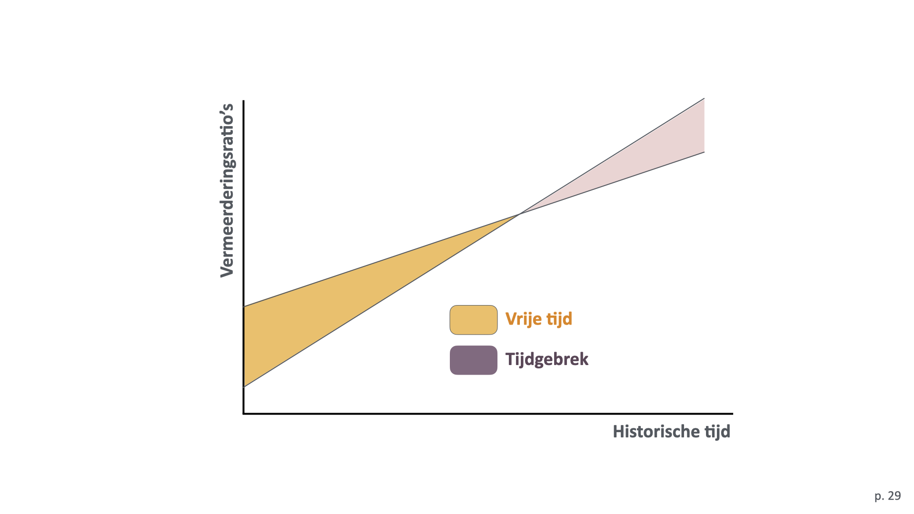
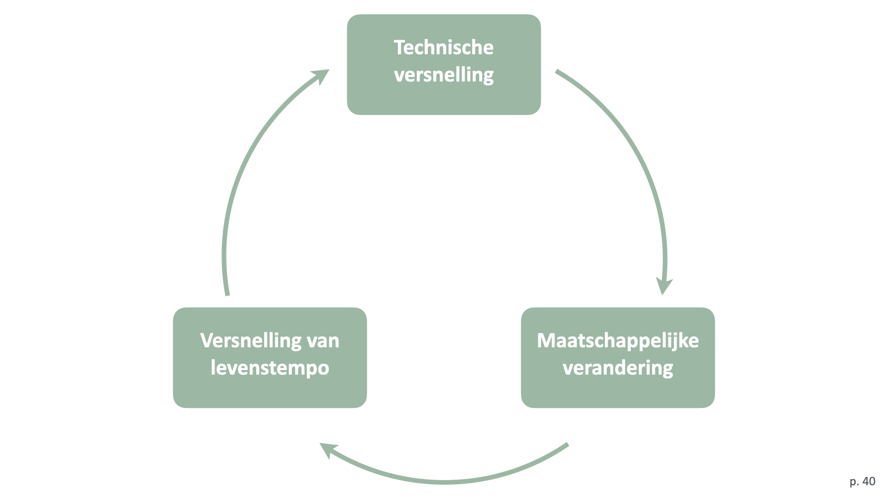

Verslag nummer 99
Toegevoegd op woensdag 22 juli 2026
1.489 woorden
Leven in tijden van versnelling
Omdat ik bezig ben met de ontwikkeling van een masterclass over de filosofie van Hartmut Rosa vond ik dat ik nog wat meer van deze auteur moest lezen. Dus ook maar dit korte essay gekocht en tussen de bedrijven door gelezen.
Centraal in het boek staat de vraag naar het goede leven – een vraag die volgens de auteur onmiddellijk gekoppeld is aan de vraag naar het tijdsbesef (onmiskenbaar doet dit denk aan Heideggers analyse dat zijn gelijk is aan tijd, zie ook Sloterdijk ergens):
Als we de structuur en de kwaliteit van ons leven willen onderzoeken, moeten we ons bezighouden met de tijdsstructuren daarvan (p.8).
De moderniteit wordt, dixit Rosa, gekenmerkt door een continu gevoel van tijdgebrek, wat een direct gevolg is van de versnelling van de dagelijkse mogelijkheden (snellere communicatie, frequenter andere kleren aantrekken, snellere communicatiemodelijkheden). Dat dit ondanks alles niet leidt tot meer vrije tijd komt voor uit het onderstaande fenomeen:

Het essay is een poging dit fenomeen verder te duiden.
Over de versnelling
Het boek valt in twee delen uiteen. In het eerste deel, Een theorie van de maatschappelijke versnelling, analyseert Rosa de verschillende soorten versnelling waardoor de moderne maatschappij gekenmerkt wordt, waardoor deze ontstaan zijn en op welke manier dit ons in-de-wereld-zijn verandert. Specifiek identificeert hij een technische versnelling, een versnelling van maatschappelijke veranderingen en een versnelling van het levenstempo.
Deze versnellingen worden veroorzaakt door twee drijfveren. Allereerst de maatschappelijke drijfveer van het concurentie-denken, die in vrijwel alle sferen van het sociale leven 'het belangrijkste principe voor toewijzing' is geworden (p.33). Daarnaast is er de culturele drijfveer van de belofte van het eeuwige leven, waarbij versnelling de moderne strategie is om het verschil tussen de wereldtijd en de levenstijd op te heffen – de versnelling is het 'moderne antwoord op het probleem van de eindigheid en de dood' (p.37).
Het mechanisme van de beide drijfveren wordt draaiende gehouden door de 'interne logica van de arbeidsdeling of de functionele differentiatie' (p.38). Dit levert een interessante feedback-lus op: technische versnelling levert een reeks maatschappelijke veranderingen op. Deze veranderingen vereisen op hun beurt een verandering in (de werkwijze van) het individu, die meer moet doen om bij te blijven. Om dit mogelijk te maken, gaat dit individu op zoek naar nieuwe technische middelen om het werk uit te voeren (pp.38-39).

Volgens Rosa is er een asymetrie tussen de krachten van de versnelling en die van de verlangzaming: alle processen van de moderniteit hebben een paradoxale keerzijde. Zo leidde bijvoorbeeld de individualisering tot de angst voor een massacultuur, de domesticatie van de natuur tot een angst voor de vernietiging van diezelfde natuur, of de rationalisatie tot een toenemende angst voor de irrationaliteit van het geheel. Met Paul Virilio stelt Rosa vast dat de razende stilstand een essentieel kenmerk van de moderniteit is (p.50).
Ontwerp van een maatschappijkritiek
In het tweede deel van het boek, Ontwerp van een kritische theorie van de maatschappelijke versnelling, identificeert Rosa drie varianten van een kritiek op de fenomenen die hij in het eerste deel heeft geïntroduceerd.
Zo is daar de functionalistische kritiek. Er bestaan spanningen tussen de snelle en langzame maatschappelijke 'instituties, processen en praktijken' (p.71). Zo gauw twee processen in elkaar grijpen (gesynchroniseerd zijn) zet het snelste van deze twee het andere onder tijdsdruk. Dergelijke desynchronisaties treden op verschillende plekken in de maatschappij op; we gebruiken bijvoorbeeld de grondstoffen sneller dan dat ze kunnen worden gereproduceerd. Er ontstaat een probleem wanneer we inzetten op een versnelling van sociaal-economische processen en een gelijktijdige afname van de politieke controle. Ook de discrepantie tussen enerzijds de snelheid van financiële transacties en het tragere tempo van de 'reële economie' leidt tot een toename van de 'valse behoeften' (p.76, zie ook Sloterdijk 2018, p.58).
De tweede vorm is de normatieve kritiek. Moderne maatschappijen worden gekenmerkt door enerzijds een 'ongelofelijke toename van de wederzijdse afhankelijkheid', terwijl ze anderszijds 'ongekend liberaal en individualistisch' zijn. Het individu voelt zich steeds volkomen vrij maar tegelijkertijd wordt hij beheerst door een 'voortdurend langer wordende lijst van maatschappelijke verplichtingen': de 'retoriek van het moeten' (p.80, zie ook p.102).
De derde en laatste vorm van kritiek is de ethische kritiek die door Rosa in tweeën wordt gesplitst.
De moderniteit wordt gekenmerkt door de belofte van de autonomie van het subject. Hieraan gekoppeld is ook sprake van de domesticatie van het noodlot (De Mul) en van de 'droom van het gepacificeerd bestaan' (p.87). Dit alles is intrinsiek gekoppeld aan de 'toenemende kinetische energie van de samenleving'. Maar deze energie heeft inmiddels een dynamiek van zichzelf gekregen, waardoor de dromen, doelen en levensplannen van het individu gebruikt worden om de versnellingmachine draaiende te houden.
Deze situatie leidt noodzakelijkerwijs tot 'maatschappelijke vervreemding' (p.91): een situatie waarin we dingen doen omdat we ze moeten doen; waarin we vergeten wat onze 'eigenlijke doelen en intenties waren', terwijl we blijven zitten met een 'vaag gevoel dat we door iets anders worden overheerst, zonder dat er een concrete onderdrukker is' (p.92).
In navolging van Marx - en dat is de tweede vorm van de ethische kritiek – stelt Rosa dat de versnelling tot een vijfvoudige vervreemding van het subject leidt:
- Vervreemding van de ruimte
- Vervreemding van de dingen
- Vervreemding ten opzichte van onze eigen handelingen
- Vervreemding van de tijd
- Zelfvervreemding en maatschappelijke vervreemding
Uit al dit wijsgerig en intellectuele geweld concludeert hij dat versnelling als nieuwe vorm van totalitarisme gezien kan (en moet) worden. Het oefent druk uit op de wil en handelingen van de subjecten, het is onmogelijk hieraan te ontkomen, het dringt door tot in alle bereiken van het leven, en het is moeilijk of onmogelijk hier kritiek op te hebben.
Nawoord
Het besproken boek is de Nederlandse vertaling van Alienation and Acceleration, die drie jaar na het oorspronkelijke werk is verschenen, maar de tekst waarop deze uitgave is gebaseerd was toen al meer dan tien jaar oud (inmiddels al drieëntwintig, dus). Rosa heeft voor deze vertaling een speciaal nawoord geschreven, waarin hij stelt dat zijn denken zich sindsdien in twee richtingen heeft ontwikkeld. Allereerst heeft het concept van dynamische stabilisering inmiddels een centrale plaats ingenomen in zijn maatschappij-analyse, en ten tweede heeft hij het idee van resonantie als het tegengestelde van vervreemding systematisch uitgewerkt.
In het nawoord bespreekt Rosa acht thesen over dynamische stabilisatie:
- Een these van de moderne tijd: de inspanningen van nu betekenen niet dat we het vanaf morgen minder zwaar zullen hebben; ze maken het voor morgen juist zwarder en creëren nieuwe problemen (p.118).
- Een these van de vooruitgang: tegenwoordig kijken we niet langer verwachtingsvol naar de toekomst, maar probereb we zo snel mogelijk weg te komen van de catastrofale afgrond die zich achter ons heeft geopend (p.125, zie ook Pfeijffer 2026, p.9).
- Een eerste these over autonomie: ons levensontwerp is er nu op gericht de voortdurende drang naar groei en toename te kunnen bijhouden, ons concurrentievermogen te behouden of dit op peil te brengen (p.126).
- Een tweede these over autonomie: het moderne verlangen naar autonomie moet dringend worden bijgesteld door of aangevuld met de herontdekking van het verlangen naar resonantie (p.126).
- Een these van concurrentie: de concurrentielogica leidt tot een ongeremde dynamisering van alle concurrentievormig georganiseerde maatschappelijke sferen (p.127).
- Een these van de burn-out: de burn-out moet worden begrepen als een extreme vorm van de vervreemding (p.128).
- Een these van surfers, drifters en terroristen: wanneer de waarneming klopt dat ook en juist de uitstekend gekwalificeerde en getalenteerde nieuwe generaties weigeren om nog langer leidinggevende posities in economie, politiek en wetenschap op zich te nemen, dan biedt de cultuur misschientoch aanknopingspunten voor verzet (p.129)
- Een these van resonantie: het komt erop aan ervoor te zorgen dat zowel de individuele als de politieke gevoligheid voor de ruimte voor resontantie groter worden (p.130).
Evaluatie
Het is duidelijk dat dit nog een relatief vroeg werk van Rosa is. Doordat hij nog erg dicht in de kritische traditie blijft hangen, komen zijn eigen ideeën en opvattingen minder goed en minder genuanceerd over het voetlicht. Het is ook grappig om te merken dat deze ideeën en opvattingen (kort: resonantie) blijkbaar vanuit de analyse van het moderne tijdsbesef zijn ontstaan (iets wat hij in het nawoord ook expliciet stelt, p.113).
Het boek lijkt wat geschreven als een zelfhulpboek, zij het met oneindig veel meer referenties en veel subtieler. Door de essaïstische vorm blijven wel veel vragen en open eindjes liggen; te vaak maakt Rosa opmerkingen als 'het lijkt me duidelijk', 'we kunnen er zeker van zijn', of 'naar mijn idee', zonder hier te refereren aan degelijk sociologisch (of zelfs maar statistisch) onderzoek. En, wat me al vaker is opgevallen, Rosa is niet zo goed in het maken van visualisaties.
Als dit het eerste boek van Rosa zou zijn dat ik had gelezen, zou ik het waarschijnlijk hier bij gelaten hebben. Ik ben daarom blij dat dat niet het geval is geweest, want dan had ik een hele hoop interessante gedachten hebben gemist.